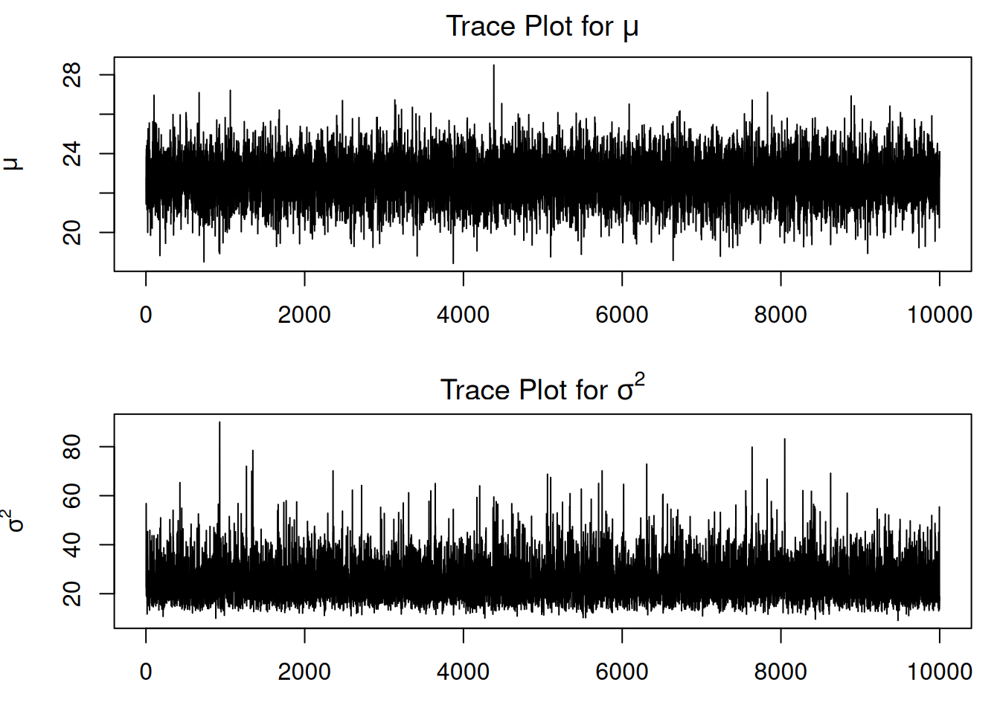
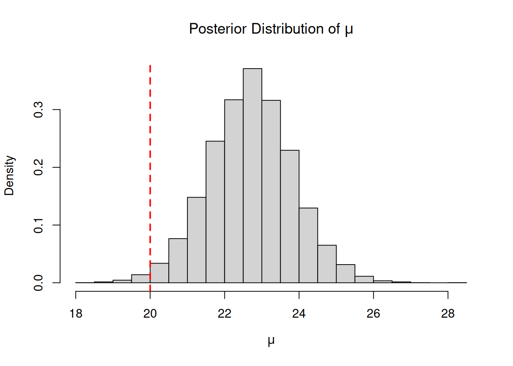

A local council introduces a sustainability program encouraging households to reduce electricity use. The program provides households with energy-efficiency advice, LED lighting, and smart-meter feedback.
After one month, the council records the monthly electricity savings (in kWh) for participating households:
\[
Y_i = \text{electricity use before} - \text{electricity use after}.
\]
Positive values indicate reduced electricity use.
The council would like to answer the following question:
What is the average monthly electricity saving, and how confident are we that the program reduces electricity use by at least 20 kWh per household?
Bayesian Normal Model
Assume the household savings follow a normal distribution:
The Normal likelihood together with conjugate priors produces full conditional posterior distributions with standard forms. As a result, Gibbs sampling can be implemented efficiently using direct simulation from familiar distributions.
Full Conditional Posterior Distributions
Using Bayes’ theorem, the resulting full conditional posterior distributions are:
These are the conditional posterior distributions used in the Gibbs sampler.
Gibbs Sampling Idea
Instead of sampling directly from the joint posterior distribution of \((\mu,\sigma^2)\), Gibbs sampling repeatedly updates each parameter conditional on the current value of the other.
The Gibbs sampling procedure is:
Choose initial values for \(\mu\) and \(\sigma^2\).
Sample a new value of \(\mu\) given the current value of \(\sigma^2\).
Sample a new value of \(\sigma^2\) given the updated value of \(\mu\).
# Posterior probability of meaningful savingmean(mu_post >20)
[1] 0.989875
Python Version
import numpy as npnp.random.seed(1234)# Simulated household electricity savings (kWh)y = np.array([18, 22, 25, 17, 30, 28, 21, 19, 24, 26,15, 23, 27, 20, 29, 31, 16, 22, 24, 18])n =len(y)# Prior hyperparametersmu0 =20# prior meantau2_0 =100# prior variancealpha0 =2# prior shapebeta0 =50# prior scale# Gibbs sampler settingsN =10000burnin =2000mu = np.zeros(N)sigma2 = np.zeros(N)# Initial valuesmu[0] = np.mean(y)sigma2[0] = np.var(y, ddof=1)for t inrange(1, N):# --- Sample mu | sigma2, y --- var_mu =1/ (n / sigma2[t -1] +1/ tau2_0) mean_mu = var_mu * ( np.sum(y) / sigma2[t -1]+ mu0 / tau2_0 ) mu[t] = np.random.normal( loc=mean_mu, scale=np.sqrt(var_mu) )# --- Sample sigma2 | mu, y --- alpha_post = alpha0 + n /2 beta_post = beta0 +0.5* np.sum((y - mu[t])**2)# If X ~ Gamma(shape=a, scale=1/rate=b),# then 1/X follows an Inverse-Gamma distribution sigma2[t] =1/ np.random.gamma( shape=alpha_post, scale=1/ beta_post )# Remove burn-inmu_post = mu[burnin:]sigma2_post = sigma2[burnin:]# Posterior summariesprint("Posterior mean of mu:")print(np.mean(mu_post))print("\n95% credible interval for mu:")print(np.percentile(mu_post, [2.5, 97.5]))print("\nPosterior probability that mu > 20:")print(np.mean(mu_post >20))
The posterior mean of \(\mu\) estimates the average household electricity saving, while the credible interval quantifies uncertainty about the true average saving. From the above output, the posterior mean is approximately 22.71 kWh, and the 95% credible interval is approximately (20.47, 24.98) kWh.
The posterior probability, \(P(\mu > 20 \mid y)\), provides a measure of confidence that the program achieves meaningful energy savings. Given the observed data and model assumptions, there is approximately a 98.9875% posterior probability that the program reduces average household electricity use by more than 20 kWh per household per month.
If this probability were low, the council might consider redesigning the program, targeting different households, or introducing stronger incentives.
Trace Plots
Trace plots help assess whether the Markov chain has reached a stable region of the posterior distribution.
par(mfrow =c(2,1), mar =c(3,4,2,1))plot(mu,type ="l",ylab =expression(mu),main =expression("Trace Plot for "* mu))plot(sigma2,type ="l",ylab =expression(sigma^2),xlab ="Iteration",main =expression("Trace Plot for "* sigma^2))

Python Version
import matplotlib.pyplot as pltfig, axs = plt.subplots(2, 1, figsize=(10, 6))axs[0].plot(mu)axs[0].set_title("Trace Plot for $\mu$")axs[0].set_ylabel("$\mu$")axs[1].plot(sigma2)axs[1].set_title("Trace Plot for $\sigma^2$")axs[1].set_xlabel("Iteration")axs[1].set_ylabel("$\sigma^2$")plt.tight_layout()plt.show()
Good trace plots should:
fluctuate around a stable region;
show no strong trends;
explore the posterior distribution well.
Posterior Distribution of \(\mu\)
hist(mu_post,breaks =30,probability =TRUE,main =expression("Posterior Distribution of "* mu),xlab =expression(mu))abline(v =20,col ="red",lwd =2,lty =2)

Python Version
plt.hist(mu_post, bins=30, density=True)plt.axvline(x=20, color='red', linestyle='--', linewidth=2)plt.title("Posterior Distribution of $\mu$")plt.xlabel("$\mu$")plt.ylabel("Density")plt.show()
The distribution of the posterior samples for \(\mu\) provides insight into the likely values of the average household electricity saving. The histogram shows the shape of the posterior distribution, while the dashed red line indicates the target saving level of 20 kWh. The histogram is approximately normal, reflecting the conjugate normal model and the influence of the data.